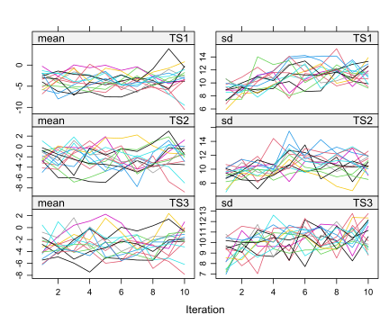
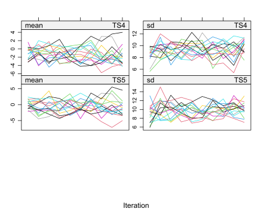
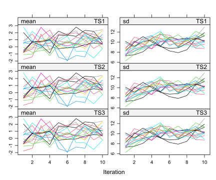
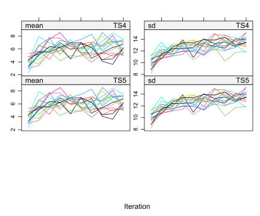

This document demonstrates how to perform passive multiple imputation in a fictive simulated dataset that contains five multi-item questionnaires each containing 10 items. In this document the following packages are used: mice, mitools and dmo.
library(mice)
library(mitools)
library(dmo)Data are generated for 100 subjects. Each subjects has observations for 5 questionnaires and 3 covariates.
#generate questionnaire data
k <- c(10,10,10,10,10)
nq <- 5
x <- dmo::gen_qdata(n=100, nq=nq, k= k)
#generate covariate data
cov <- MASS::mvrnorm(n=100, mu=c(5,5,5), Sigma=matrix(c(10,1,1,1,10,1,1,1,10),3,3))
colnames(cov) <- c("cov1", "cov2", "cov3")
#combine in data.frame
x <- data.frame(x,cov)Missing values are generated with the MAR mechanism for 25% of the subjects with a random pattern. Missings are only generated in the item scores (not in the covariates).
alpha <- 0.25
#regerate 2 random patterns for missing item data
pattern <- matrix(c(sample(c(0,1), size=2*sum(k),replace = TRUE)),nrow=2)
pattern <- cbind(pattern, matrix(c(1,1,1,1,1,1),nrow=2))
pattern## [,1] [,2] [,3] [,4] [,5] [,6] [,7] [,8] [,9] [,10] [,11] [,12] [,13] [,14]
## [1,] 0 0 0 1 0 0 1 1 0 1 1 0 1 1
## [2,] 0 0 1 1 1 0 1 1 1 1 1 0 1 0
## [,15] [,16] [,17] [,18] [,19] [,20] [,21] [,22] [,23] [,24] [,25] [,26]
## [1,] 0 0 1 0 1 0 1 1 1 1 0 0
## [2,] 0 1 1 0 1 0 1 0 0 1 1 1
## [,27] [,28] [,29] [,30] [,31] [,32] [,33] [,34] [,35] [,36] [,37] [,38]
## [1,] 0 0 0 0 0 1 0 1 0 0 1 1
## [2,] 1 1 0 0 1 1 0 0 0 0 0 1
## [,39] [,40] [,41] [,42] [,43] [,44] [,45] [,46] [,47] [,48] [,49] [,50]
## [1,] 0 0 1 1 1 0 0 0 1 0 0 0
## [2,] 0 0 1 1 1 0 1 0 0 1 1 0
## [,51] [,52] [,53]
## [1,] 1 1 1
## [2,] 1 1 1#apply each pattern with equal frequency and equal odds
f <- c(0.5,0.5)
g <- c(4,4)
#generate missings in the data
x <- MAR(x,alpha,pattern,f,g)
colnames(x) <- c(paste0("I",1:sum(k)),c("cov1", "cov2", "cov3") )
head(x, 10)## I1 I2 I3 I4 I5 I6
## [1,] -4.2123718 -0.6966300 -3.9878888 -1.6640780 -5.7767770 -3.1306229
## [2,] NA NA -0.8150806 -0.9434251 3.8998533 NA
## [3,] -1.0956179 2.7130313 1.7619391 2.3344375 -1.5151062 0.9339259
## [4,] -1.1751435 -1.3086835 -0.5026414 -0.3071657 1.5883473 -4.6298976
## [5,] 0.4522121 2.0932638 -1.6239452 -0.7755739 -2.0276381 -0.8481528
## [6,] -1.6322877 -1.8356854 -1.2186968 -0.7302391 0.1192817 1.9888505
## [7,] -0.4664822 2.4290634 -0.7852631 1.4749111 0.0920636 3.5069773
## [8,] 2.3234198 -1.7108419 -2.6992181 1.3924420 -1.0852576 -1.5023326
## [9,] -1.1471733 -0.8588989 -2.9475546 -1.5415813 -0.4020737 -0.3603322
## [10,] NA NA -2.8278189 2.6940701 -0.5361893 NA
## I7 I8 I9 I10 I11 I12
## [1,] -5.0902125 -1.7885624 -2.5049002 -3.6112835 -1.0730973 1.9554363
## [2,] 4.3651544 -2.6181569 -0.9462872 -1.4803049 0.2397988 NA
## [3,] -2.2254290 1.2006023 -1.7273267 0.9534413 -1.2139110 -0.7786420
## [4,] 0.5575738 -3.5836811 2.3357142 -1.5851784 -1.5154221 1.0454121
## [5,] 0.1836800 -4.0897185 -3.6767132 3.7352565 -0.0907969 -0.8866843
## [6,] -2.7835771 -2.3823034 1.0539107 -2.5328048 2.6817319 1.0262372
## [7,] 2.6137980 2.9815187 1.2272616 -1.8508163 0.8360177 3.6622239
## [8,] 1.0093968 0.6764685 -2.6751323 -3.3074331 -2.3922986 1.7914032
## [9,] -2.4055456 1.0641398 1.8554360 -2.5831636 1.7302381 -2.0047381
## [10,] -0.5087614 1.8876004 1.0382823 -1.5981407 2.3909062 NA
## I13 I14 I15 I16 I17 I18
## [1,] -4.9540515 -4.2514415 0.44266161 -4.1548401 -4.76412528 -1.74577339
## [2,] -1.4492204 NA NA -0.6782095 -1.32301115 NA
## [3,] -0.9744507 3.2179834 3.46322952 3.1438804 1.44797235 -0.67035584
## [4,] -2.2756947 0.9470544 2.36496415 2.2498954 -0.98451161 -3.30642490
## [5,] 1.2875602 0.9369687 0.95368535 0.4162745 1.04857510 1.09516226
## [6,] 2.2536549 1.6196289 0.11573427 -1.1814989 -0.19281424 -0.05888351
## [7,] 0.8537435 2.7177028 2.83202250 3.4826717 0.41200374 1.00840933
## [8,] 1.6513901 -2.2783667 1.10472097 1.5734809 -2.58064265 0.89258603
## [9,] -0.6339256 -4.1417873 0.08933693 -1.4652226 -0.48616546 0.44575279
## [10,] 3.6444817 NA NA -3.0995505 0.02388339 NA
## I19 I20 I21 I22 I23 I24
## [1,] -0.2835910 -0.5665424 -0.45478225 -1.8786779 -0.8039915 -2.7397759
## [2,] 2.1117144 NA 2.00469446 NA NA 3.6043891
## [3,] -0.9846582 -0.9884729 -0.92868958 3.7590325 0.2981885 -0.7861271
## [4,] 0.1888947 0.1030756 0.95395755 -2.2761537 -2.1957303 -1.2223708
## [5,] 1.4253650 -3.6690664 2.13046622 -6.5323802 -1.5475088 -2.1747121
## [6,] -1.0250888 -2.8450155 3.25163996 1.2687413 -1.7213224 -1.1633662
## [7,] 1.8630549 2.1597522 -1.75773210 2.5367968 2.6910503 5.8151385
## [8,] -1.2346984 -1.4937838 -0.12290180 0.6927784 0.7237024 -3.4634005
## [9,] -0.7483797 5.3913813 -0.08414964 -1.1575885 -1.0250982 -3.5637588
## [10,] 0.1520539 NA -1.08209350 NA NA 3.5167661
## I25 I26 I27 I28 I29 I30
## [1,] -2.0028768 -2.15102357 -6.0606896 -0.60902409 -1.7220728 -0.01323532
## [2,] -1.2467093 -2.62906859 0.2339700 4.83012549 NA NA
## [3,] -0.8176163 -0.49728813 0.7424964 0.11310886 1.3779359 2.82916419
## [4,] 1.2096410 0.96548201 0.5758089 -0.01056311 0.3240559 -0.30197601
## [5,] 1.3485590 -2.50594299 1.2192726 -0.94914077 -1.9744227 -2.78135535
## [6,] -0.7151556 0.27319171 1.2435624 0.52172501 -1.5609808 -1.92624675
## [7,] 0.9776554 0.04460717 -0.4342278 0.15829277 0.6942329 2.05136455
## [8,] -0.7424498 0.85686545 -2.7386986 1.07085693 0.7414472 -3.79032516
## [9,] 2.7114551 0.64338316 -3.1992567 0.79185602 -5.3997854 1.56887405
## [10,] 0.6739280 2.70760995 3.9367836 1.57579706 NA NA
## I31 I32 I33 I34 I35 I36
## [1,] -0.2927140 -0.5467095 -2.8301560 0.05825956 -1.3356713 -2.0347030
## [2,] 0.8660649 2.2310132 NA NA NA NA
## [3,] -0.4066388 -2.6858805 1.2088588 2.52118185 2.0207168 0.7884830
## [4,] 0.5839437 -1.5793084 -3.7932848 -3.55597787 0.1227015 2.8581983
## [5,] -0.6012829 0.6485900 0.1976783 0.92114737 -2.1477326 4.3450967
## [6,] 0.7122878 0.7843786 -3.2304695 -1.97452675 0.5955884 0.9617208
## [7,] 0.7316064 4.5217728 2.0520059 -0.95393517 -2.7703470 -2.9758527
## [8,] 0.8968272 -2.5370112 1.0136489 0.63150659 -0.6116324 -1.5389781
## [9,] -0.3019300 0.3202016 -0.2981074 1.00954368 -1.4697329 1.2630177
## [10,] 1.7908917 3.8979179 NA NA NA NA
## I37 I38 I39 I40 I41 I42
## [1,] 0.2236068 -0.5093454 -0.6693531 -1.9800302 -3.0560048 -3.842505347
## [2,] NA 0.3346960 NA NA -5.2191047 2.922982978
## [3,] -4.3980016 -0.7621218 -2.2637237 3.8438774 0.6158814 -0.007534656
## [4,] -1.8750891 -2.7868293 -3.6613401 -0.8418690 -3.5146181 -1.969287510
## [5,] 3.2713515 0.9742017 1.5034708 -2.1742776 -2.0171351 1.833740296
## [6,] 0.0164965 1.2729332 -0.7779782 0.6841712 -3.5260361 -0.954138162
## [7,] 1.5712197 0.9224833 -1.9398259 0.3030731 2.5021015 0.097683763
## [8,] -0.4737559 -1.7701453 -5.4983435 -0.9893511 -2.9639430 1.476012180
## [9,] 1.1990973 0.7522839 1.2379034 2.0754601 -1.4690215 -1.242089678
## [10,] NA 2.7862242 NA NA -1.3064510 0.068896039
## I43 I44 I45 I46 I47 I48
## [1,] -0.6033982 -2.8552807 -2.1674226 2.6440457 -5.096163 -3.8187968
## [2,] -1.5006161 NA -0.6242635 NA NA -0.1883802
## [3,] 1.6830396 3.2593570 -2.1808826 1.1402016 0.491733 1.9714705
## [4,] 3.3270684 -1.1299963 -1.3251412 -3.5534644 -1.595774 -2.8253815
## [5,] -2.5409760 -3.5261811 -1.5984657 -1.1321742 -4.621399 -0.1810314
## [6,] -1.1901945 -1.6444768 -1.4706977 3.1112319 1.612741 -0.4626157
## [7,] -0.8161250 1.6252903 0.3938651 1.2680615 1.653549 -2.2993561
## [8,] 0.2913002 -0.6457453 -0.7540847 0.2289805 -3.938384 -2.2429203
## [9,] -2.7593586 -2.9501350 1.4428962 -1.1146749 2.318809 -0.7004656
## [10,] -3.1991416 NA 4.6279456 NA NA -2.2583565
## I49 I50 cov1 cov2 cov3
## [1,] -5.1710123 -2.1280555 4.8834808 5.2713917 -0.537846
## [2,] 1.9080615 NA 8.9230261 9.0751174 4.706749
## [3,] 1.3317618 0.3940778 6.1102205 9.2522370 8.737448
## [4,] 0.8353141 -0.1160126 0.8309382 2.8302947 1.915552
## [5,] -0.3307376 3.2259820 2.5834308 7.2747619 7.224185
## [6,] 1.4225184 2.2215900 2.3613152 4.5439161 8.080270
## [7,] -0.8363716 2.2403441 13.8814785 8.2989303 4.660830
## [8,] -2.1797183 1.8734784 7.3719970 6.2362928 2.310740
## [9,] -0.6131909 -6.1265465 3.5533428 0.4925536 2.383705
## [10,] 0.9267267 NA 7.2835987 2.5758013 1.834117Calculate the total scores (sum scores) for each questionnaire, only when all items are observed.
ts <- dmo::calculate_ts(x, nq=5,k= c(10,10,10,10,10))
data <- data.frame(x,ts)In passive multiple imputation, the item scores are imputed and then during the imputation, the total score is calculated based on the imputed item scores. These total scores can then be used as predictors for imputations of other variables.
There are 2 imputation models that are used in this procedure.
For this model, we can use the default settings used in mice.
tsdata <- data.frame(ts, cov)
ini <- mice(tsdata, max=0, print=FALSE)
ini$meth## TS1 TS2 TS3 TS4 TS5 cov1 cov2 cov3
## "pmm" "pmm" "pmm" "pmm" "pmm" "" "" ""ini$predictorMatrix## TS1 TS2 TS3 TS4 TS5 cov1 cov2 cov3
## TS1 0 1 1 1 1 1 1 1
## TS2 1 0 1 1 1 1 1 1
## TS3 1 1 0 1 1 1 1 1
## TS4 1 1 1 0 1 1 1 1
## TS5 1 1 1 1 0 1 1 1
## cov1 1 1 1 1 1 0 1 1
## cov2 1 1 1 1 1 1 0 1
## cov3 1 1 1 1 1 1 1 0For the passive imputation model, we need to adapt the methods for the total scores, and the predictor matrix for the items.
First the imputation method is adapted for the questionnaire total scores.
ini <- mice(data, max=0, print=FALSE)
meth <- ini$meth
#for each questionnaire adapt imputation method (meth): make function to calculate TS between iterations. Example TS1:
#meth["TS1"] <- "~I(I1+I2+I3+I4+I5+I6+I7+I8+I9+I10)" - loop below automates for simulation data
nq <- 5
k <- c(10,10,10,10,10)
for(q in seq_along(1:nq)){
meth[paste0("TS",q)] <- paste0("~I(", paste(paste0("I",1:k[q]), collapse="+"), ")")
}
meth[c("TS1", "TS2", "TS3", "TS4", "TS5")]## TS1 TS2
## "~I(I1+I2+I3+I4+I5+I6+I7+I8+I9+I10)" "~I(I1+I2+I3+I4+I5+I6+I7+I8+I9+I10)"
## TS3 TS4
## "~I(I1+I2+I3+I4+I5+I6+I7+I8+I9+I10)" "~I(I1+I2+I3+I4+I5+I6+I7+I8+I9+I10)"
## TS5
## "~I(I1+I2+I3+I4+I5+I6+I7+I8+I9+I10)"The the predictor matrix is adapted such that items are imputed by items from their own questionnaire and other total scores. In predictor matrix: target variable is in row and the predictor variables are in the column. Below the predictor matrix for imputing the first 10 items is shown.
pred <- ini$predictorMatrix
pred[paste0("I", 1:10),] <- 0
pred[paste0("I", 1:10),paste0("I", 1:10)] <- 1
pred[paste0("I", 1:10),c("TS2","TS3","TS4","TS5")] <- 1
pred[paste0("I", 11:20),] <- 0
pred[paste0("I", 11:20),paste0("I", 11:20)] <- 1
pred[paste0("I", 11:20),c("TS1","TS3","TS4","TS5")] <- 1
pred[paste0("I", 21:30),] <- 0
pred[paste0("I", 21:30),paste0("I", 21:30)] <- 1
pred[paste0("I", 21:30),c("TS1","TS2","TS4","TS5")] <- 1
pred[paste0("I", 31:40),] <- 0
pred[paste0("I", 31:40),paste0("I", 31:40)] <- 1
pred[paste0("I", 31:40),c("TS1","TS2","TS3","TS5")] <- 1
pred[paste0("I", 41:50),] <- 0
pred[paste0("I", 41:50),paste0("I", 41:50)] <- 1
pred[paste0("I", 41:50),c("TS1","TS2","TS3","TS4")] <- 1
pred[,colnames(cov)] <- 1 #covariates as predictors for all items
pred <- pred*ini$predictorMatrix
head(pred, 10)## I1 I2 I3 I4 I5 I6 I7 I8 I9 I10 I11 I12 I13 I14 I15 I16 I17 I18 I19 I20 I21
## I1 0 1 1 1 1 1 1 1 1 1 0 0 0 0 0 0 0 0 0 0 0
## I2 1 0 1 1 1 1 1 1 1 1 0 0 0 0 0 0 0 0 0 0 0
## I3 1 1 0 1 1 1 1 1 1 1 0 0 0 0 0 0 0 0 0 0 0
## I4 1 1 1 0 1 1 1 1 1 1 0 0 0 0 0 0 0 0 0 0 0
## I5 1 1 1 1 0 1 1 1 1 1 0 0 0 0 0 0 0 0 0 0 0
## I6 1 1 1 1 1 0 1 1 1 1 0 0 0 0 0 0 0 0 0 0 0
## I7 1 1 1 1 1 1 0 1 1 1 0 0 0 0 0 0 0 0 0 0 0
## I8 1 1 1 1 1 1 1 0 1 1 0 0 0 0 0 0 0 0 0 0 0
## I9 1 1 1 1 1 1 1 1 0 1 0 0 0 0 0 0 0 0 0 0 0
## I10 1 1 1 1 1 1 1 1 1 0 0 0 0 0 0 0 0 0 0 0 0
## I22 I23 I24 I25 I26 I27 I28 I29 I30 I31 I32 I33 I34 I35 I36 I37 I38 I39 I40
## I1 0 0 0 0 0 0 0 0 0 0 0 0 0 0 0 0 0 0 0
## I2 0 0 0 0 0 0 0 0 0 0 0 0 0 0 0 0 0 0 0
## I3 0 0 0 0 0 0 0 0 0 0 0 0 0 0 0 0 0 0 0
## I4 0 0 0 0 0 0 0 0 0 0 0 0 0 0 0 0 0 0 0
## I5 0 0 0 0 0 0 0 0 0 0 0 0 0 0 0 0 0 0 0
## I6 0 0 0 0 0 0 0 0 0 0 0 0 0 0 0 0 0 0 0
## I7 0 0 0 0 0 0 0 0 0 0 0 0 0 0 0 0 0 0 0
## I8 0 0 0 0 0 0 0 0 0 0 0 0 0 0 0 0 0 0 0
## I9 0 0 0 0 0 0 0 0 0 0 0 0 0 0 0 0 0 0 0
## I10 0 0 0 0 0 0 0 0 0 0 0 0 0 0 0 0 0 0 0
## I41 I42 I43 I44 I45 I46 I47 I48 I49 I50 cov1 cov2 cov3 TS1 TS2 TS3 TS4 TS5
## I1 0 0 0 0 0 0 0 0 0 0 1 1 1 0 1 1 1 1
## I2 0 0 0 0 0 0 0 0 0 0 1 1 1 0 1 1 1 1
## I3 0 0 0 0 0 0 0 0 0 0 1 1 1 0 1 1 1 1
## I4 0 0 0 0 0 0 0 0 0 0 1 1 1 0 1 1 1 1
## I5 0 0 0 0 0 0 0 0 0 0 1 1 1 0 1 1 1 1
## I6 0 0 0 0 0 0 0 0 0 0 1 1 1 0 1 1 1 1
## I7 0 0 0 0 0 0 0 0 0 0 1 1 1 0 1 1 1 1
## I8 0 0 0 0 0 0 0 0 0 0 1 1 1 0 1 1 1 1
## I9 0 0 0 0 0 0 0 0 0 0 1 1 1 0 1 1 1 1
## I10 0 0 0 0 0 0 0 0 0 0 1 1 1 0 1 1 1 1For both imputation procedures we use 15 imputations and 10 iterations. The object imp1 contains the imputations for the total scores only from other total scores and the thee covariates. The object imp2 for items and total scores with passive imputation.
imp1 <- mice(tsdata, 15,maxit=10,seed=61085,print=FALSE)
imp2 <- mice(data, m=15, meth=meth,pred=pred, maxit=10, seed=12354, print=FALSE)The the imputations for the Total scores in the total score imputation (imp1) passive imputation procedure (imp2).
plot(imp1, paste0("TS",1:5))
plot(imp2, paste0("TS",1:5))
Combine imputations and select (per questionnaire) the ts from imp1 for persons with <75% of items missing; and the ts from imp2 for persons with >75% of items missing (in a questionnaire).
First make indicators for each q if missing <75%:
calculate_i <- function(x,nq,k){
ind <- matrix(0,nrow=nrow(x), ncol=(nq))
for (q in 1:(nq)){
ind[,q] <- apply(x[,(((q*k[q])-k[q])+1):(q*k[q])],1,function(x) {sum(is.na(x))/length(x)})
}
colnames(ind) <- paste("TS",1:nq,sep="")
ind <- ifelse(ind <0.75,1,0)
ind
}
indicator <- calculate_i(x=data, nq=5, k=c(10,10,10,10,10))Then select correct TS from each imputation.
implist <- lapply(1:15, function(x){
x1 <- complete(imp1, x)
x2 <- complete(imp2, x)
tsimp <- lapply(1:nq, function(x){
ifelse(indicator[,x]==1, x2[,paste0("TS",x)], x1[,paste0("TS",x)] )
})
tsimp <- data.frame(tsimp)
colnames(tsimp) <- paste0("impTS",1:nq)
data.frame(x1,tsimp)
})Save data in an imputation list for analysis and test relation between TS1 and TS3
impdata <- imputationList(implist)
fit <- with (impdata, lm(impTS1~impTS3 ))
summary(pool (fit))## term estimate std.error statistic df p.value
## 1 (Intercept) -1.0989906 0.67911999 -1.618257 95.95559 0.1088898
## 2 impTS3 0.8903405 0.05525615 16.112968 94.85637 0.0000000